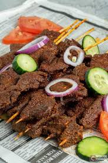

🔥 Suya – Nigerian Grilled Spiced Meat Skewers
In Hausa
Home
In Hausa, the name of this dish is tsire. It is printed in Hausaland and now found in every West African state.
📖 Introduction
Suya is a popular West African street food, especially beloved in Nigeria. It consists of thin slices of beef marinated in a unique blend of ground peanuts and spices (called yaji), then grilled to perfection over an open flame. It's spicy, flavorful, and often sold at roadside grills wrapped in old newspaper and served with onions and tomatoes. Suya is not just food — it's a social experience!
🧂 Ingredients
- 500g boneless beef (thinly sliced)
- 3 tablespoons groundnut powder (roasted peanuts, finely ground)
- 1 tablespoon chili powder (adjust to taste)
- 1 teaspoon garlic powder
- 1 teaspoon ginger powder
- 1 bouillon cube (crushed)
- Salt to taste
- 1 tablespoon vegetable oil
- Skewers (wooden or metal)
🧑🏽🍳 Preparation
- Prepare the Beef:
Wash and pat dry the beef.
Slice into thin, flat strips (cut against the grain for tenderness).
- Mix the Suya Spice (Yaji):
In a dry bowl, mix together groundnut powder, chili powder, garlic powder, ginger powder, bouillon cube, and a pinch of salt.
- Marinate the Meat:
Rub the spice mix generously on the beef slices.
Add a little vegetable oil and mix thoroughly.
Cover and refrigerate for at least 2–4 hours, or overnight for deeper flavor.
- Skewer the Meat:
Thread the marinated beef onto skewers, spreading it flat for even grilling.
- Grill:
Grill over hot charcoal, on a gas grill, or in an oven preheated to 180°C (356°F).
Grill each side for 5–7 minutes, basting with oil until golden brown and slightly charred.

🍽️ How It’s Served
- Typically served hot, straight off the grill
- With sliced onions, tomatoes, and cabbage
- Sprinkled with extra yaji spice
- Sometimes accompanied by:
- Masa (fermented rice cake)
- Gurasa (local flatbread)
- Cold drinks
- Traditionally wrapped in newspaper or foil when sold by street vendors
Home